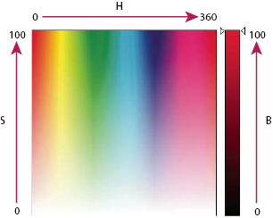

HSB
Based on the human perception of color, the HSB model describes three fundamental characteristics of color:
- Hue
- Color reflected from or transmitted through an object. It is measured as a location on the standard color wheel, expressed as a degree between 0° and 360°. In common use, hue is identified by the name of the color, such as red, orange, or green.
- Saturation
- Strength or purity of the color (sometimes called chroma). Saturation represents the amount of gray in proportion to the hue, measured as a percentage from 0% (gray) to 100% (fully saturated). On the standard color wheel, saturation increases from the center to the edge.
- Brightness
-
Relative lightness or darkness of the color,
usually measured as a percentage from 0% (black) to 100% (white).

HSB color model
- H.
- Hue
- S.
- Saturation
- B.
- Brightness